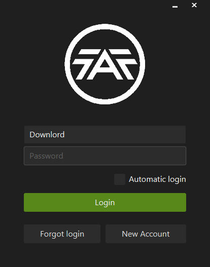
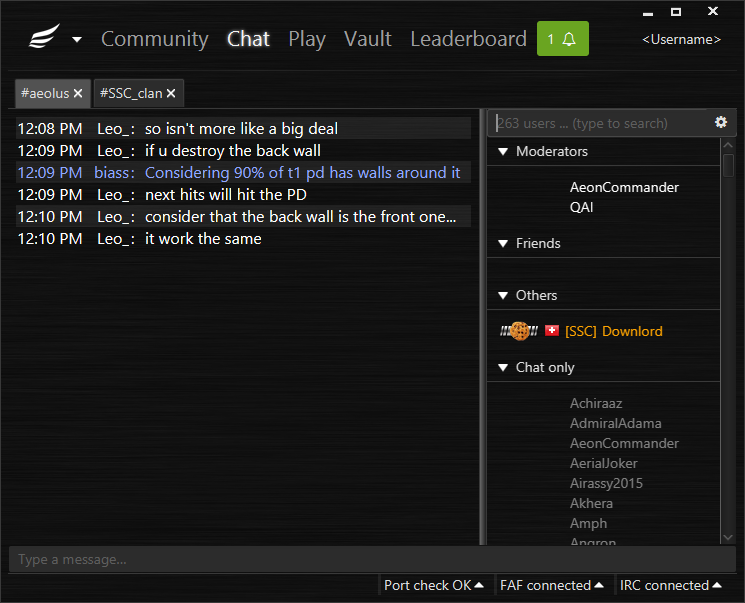
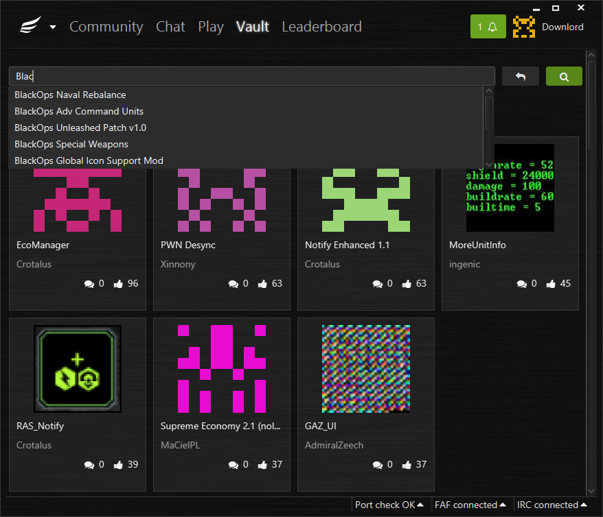
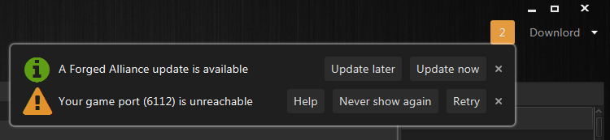
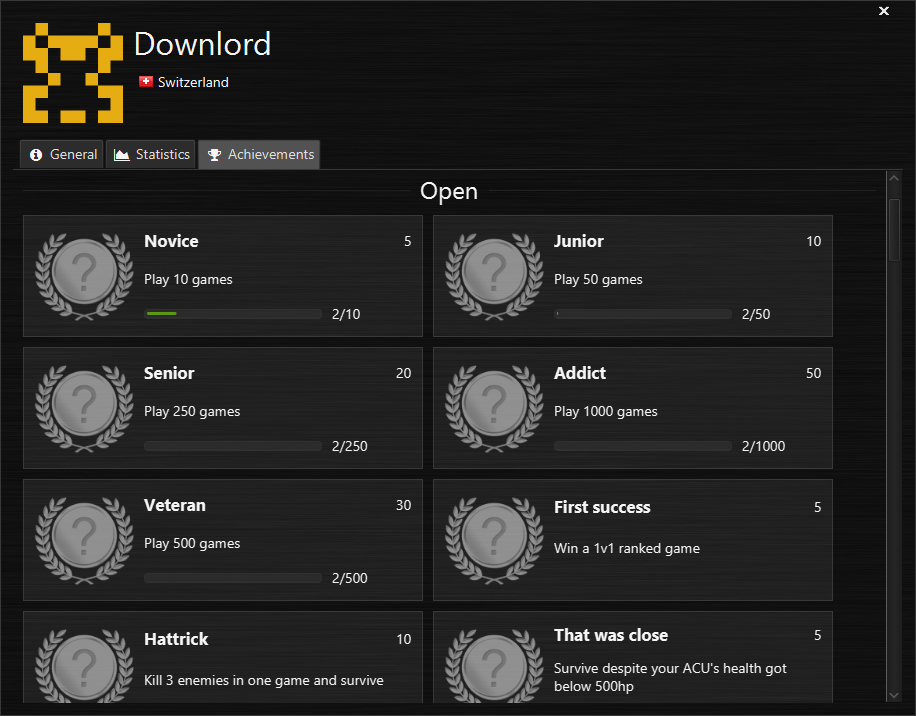
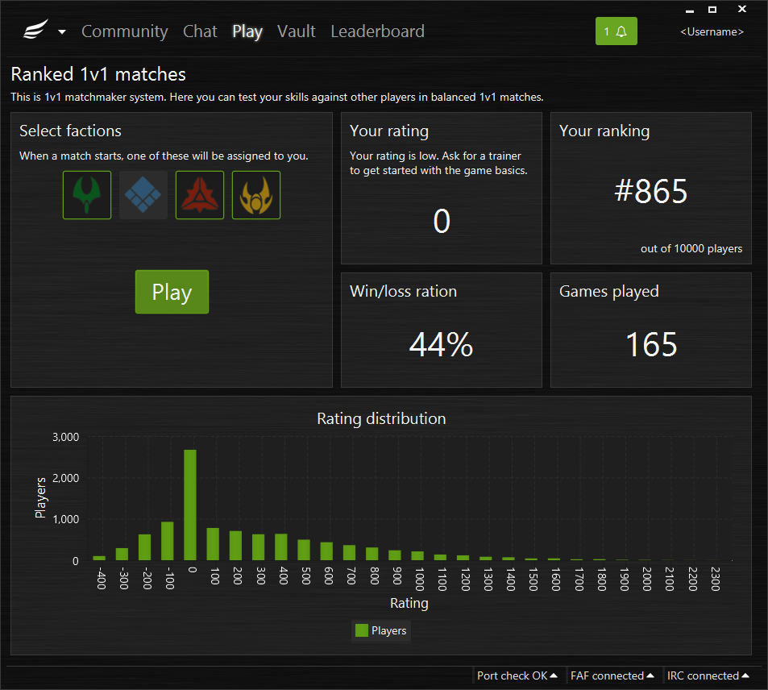

Downlord's Forged Alliance Forever Client
Do you also feel that the current FAF client is out-of-date? Would you love to see a modern, actively developed and future-proof client? So am I. That's why I started this re-implementation.
While I'm doing this for free, donations help me investing more time into this project. It really makes a difference! As a little thank-you, I'll provide the following "rewards":
- $5 or more I'll send you a PM to thank you for your support
- $10 or more I'll play a game with you
- $25 or more Your name will be listed in the "backers" list within the client
- $50 or more Your name will go into the "special thanks" section in the client's "About" window. I will work closely with you (Skype, Teamspeak, Mumble, etc.) and ask you for feedback, if desired.
Basic features
The client needs to implement all important features of the current client.
| Feature | Description | Complexity | Status |
|---|---|---|---|
| FAF login | Logging into FAF server, reporting you as online | 4/5 | |
| IRC login | Logging into IRC chat | 2/5 | |
| Public chat | Chat panel, list of online users, country flags, avatars, hyperlinks | 4/5 | |
| Private messages | Sending and receiving private messages | 1/5 | |
| Listing available games | Lists open games with name/map preview/players | 2/5 | |
| Launch game | Launch the game as commanded by the server | 2/5 | |
| Proxy support | Allows indirect connection to other peers. | 4/5 | |
| Local relay server | Connects the game with the FAF server in order to report lobby status etc. | 3/5 | |
| Create new game | Dialog that allows you to create a new game | 2/5 | |
| Join game | Join an existing game | 2/5 | |
| Binary patching | Patching of ForgedAlliance.exe and some DLL-Files | 3/5 | |
| Auto-Update | Downloading files (mods) from FAF update server. | 4/5 | |
| Map vault | Listing/downloading/uploading/removing maps | 2/5 | |
| Replay vault | Listing, sorting, searching and parsing replays | 3/5 | |
| Mod vault | Listing, sorting, filtering, (un-)installing and uploading mods | 3/5 | |
| Tutorials vault | Listing, sorting, filtering, starting tutorials | 2/5 | |
| Local replay server | Storing replays and forwarding them to the online replay server | 2/4 | |
| Leaderboards | Listing and searching players on leaderboards | 2/5 | |
| Mumble connector | Automatically launching Mumble and creating/joining channels as needed | 2/5 | |
| FAF sign up | Registering as a new player | 1/5 | |
| Automatic IRC registration | Automatically registers your FAF user to the IRC server | 1/5 | |
| Player information | Displaying information about a player (stats, other?) | 2/5 | |
| Notifications | Notifying about friends that joined/hosted games, games that are ready to go | 3/5 | |
| UPnP | Automatically configures port-forwarding on your router, if possible | 1/5 | |
| 1v1 automatch | Reports yourself as available for 1v1 match, or notifies you if one is available | 2/5 | |
| Tournaments | Listing/joining/leaving tournaments | 2/5 |
Advanced features
My client will contain a lot of improvements compared to the current client. This list is steadily growing.
| Feature | Description | Complexity | Status |
|---|---|---|---|
| FAF reconnection | Automatic reconnection to FAF if connection has been lost | 2/5 | |
| IRC reconnection | Automatic reconnection to IRC if connection has been lost | 2/5 | |
| Background tasks | Executing tasks in background instead of blocking the UI | 3/5 | |
| Log rotation | No more super large log files; automatic log file rotation (limits log file size) | 1/5 | |
| Port check | Checks whether your game port is reachable. *Needs server-side support | 1/5 | * |
| Grouping chat users | Grouping users by friend/foe/moderators/others/IRC only. *Moderators are not yet correctly detected | 3/5 | * |
| Notification system | Notifying the user about important events | 3/5 | |
| Status bar | Telling you what's going on right now | 2/5 | |
| Game suggestion | Notify the user about games he might want to join | 3/5 | |
| Beginners guide | The client helps beginners with their first steps. | 3/5 | |
| Various chat improvements | Highlight users, paste images, preview links | 3/5 | |
| Improved replay vault | Rate, comment and share replays. Search by ID and filter by names. Lol. | 3/5 | |
| Achievements | Not yet clear what can be implemented, but it is doable | 5/5 |
Mobile app
I'd like to create a mobile app (iOS and Android) that connects to your FAF client (through WLAN) allowing you to continue chatting while sitting on the toilet (please, just don't tell us about it) and observing the game-lobby while having a smoke. To mention just some of the possibilities.
Screenshots






Questions you may ask
Who are you anyway?
My name is Michel (aka Downlord), I'm 27 and I've been a professional software engineer since 2008 (well, that time I was rather crappy). Recently I was part of a 100-man development team that has been developing the Swiss RTGS system SIC which is a two-digit million dollar project basically handling the Swiss bank's money. Since its launch date on 16. April it had no single failure - so trust me when I tell you: I know what high quality software looks like (swiss made, anyone? ;-)).
I quit this exciting project in September 2014 since I wanted to change something in my life; I wanted to be self-employed. And here I am now.
Why a new client?
While the current client fulfills its purpose, it's pretty crippled. There are many bugs, it doesn't look really good and, from a technical perspective, the design is flawed.
So why not just fixing the old client? Well, fixing code instead of replacing it is more efficient up to a certain point. But once that point is crossed and there is too much to fix (not only bugs, but a flawed design), you're better off rewriting it from scratch. Has that point been crossed? Well, I'm not that sure, but as far as I can tell it's surely pretty close to it. And looking at how the server updates went so far, I seemed to be pretty much right.
But here is the main problem: we don't have the resources. While there pop up people here and there wanting to help, what is needed is at least one committed and skilled developer. Sheeo you say? Well, he's so busy fixing the server code (which is much worse than the client code) that he probably won't have time in the near future.
So why don't I fix it you ask? Because I'm neither a skilled Python developer nor do I have the desire to become one. I am however, an experienced and skilled Java developer (unfortunately there's no trueskill for developers to prove that claim :-))
Will this split the community?
No, the client completely integrates within the existing system. People using the old client can always interact with people using the new client; they won't even notice there's a difference (except that one swears about the client bugs and the other finds it super smooth :-)).